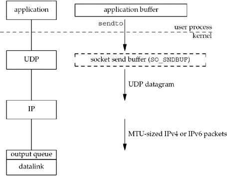
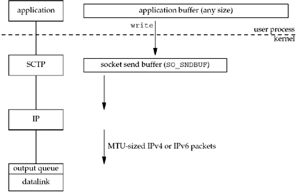

2.11 Buffer Sizes and Limitations
Certain limits affect the size of IP datagrams. We first describe these limits and then tie them all together with regard to how they affect the data an application can transmit.
The maximum size of an IPv4 datagram is 65,535 bytes, including the IPv4 header. This is because of the 16-bit total length field in Figure A.1. The maximum size of an IPv6 datagram is 65,575 bytes, including the 40-byte IPv6 header. This is because of the 16-bit payload length field in Figure A.2. Notice that the IPv6 payload length field does not include the size of the IPv6 header, while the IPv4 total length field does include the header size. IPv6 has a jumbo payload option, which extends the payload length field to 32 bits, but this option is supported only on datalinks with a maximum transmission unit (MTU) that exceeds 65,535. (This is intended for host-to-host interconnects, such as HIPPI, which often have no inherent MTU.) Many networks have an MTU which can be dictated by the hardware. For example, the Ethernet MTU is 1,500 bytes. Other datalinks, such as point-to-point links using the Point-to-Point Protocol (PPP), have a configurable MTU. Older SLIP links often used an MTU of 1,006 or 296 bytes. The minimum link MTU for IPv4 is 68 bytes. This permits a maximum-sized IPv4 header (20 bytes of fixed header, 30 bytes of options) and minimum-sized fragment (the fragment offset is in units of 8 bytes). The minimum link MTU for IPv6 is 1,280 bytes. IPv6 can run over links with a smaller MTU, but requires link-specific fragmentation and reassembly to make the link appear to have an MTU of at least 1,280 bytes (RFC 2460 [Deering and Hinden 1998]). The smallest MTU in the path between two hosts is called the path MTU. Today, the Ethernet MTU of 1,500 bytes is often the path MTU. The path MTU need not be the same in both directions between any two hosts because routing in the Internet is often asymmetric [Paxson 1996]. That is, the route from A to B can differ from the route from B to A. When an IP datagram is to be sent out an interface, if the size of the datagram exceeds the link MTU, fragmentation is performed by both IPv4 and IPv6. The fragments are not normally reassembled until they reach the final destination. IPv4 hosts perform fragmentation on datagrams that they generate and IPv4 routers perform fragmentation on datagrams that they forward. But with IPv6, only hosts perform fragmentation on datagrams that they generate; IPv6 routers do not fragment datagrams that they are forwarding. We must be careful with our terminology. A box labeled as an IPv6 router may indeed perform fragmentation, but only on datagrams that the router itself generates, never on datagrams that it is forwarding. When this box generates IPv6 datagrams, it is really acting as a host. For example, most routers support the Telnet protocol and this is used for router configuration by administrators. The IP datagrams generated by the router's Telnet server are generated by the router, not forwarded by the router. You may notice that fields exist in the IPv4 header (Figure A.1) to handle IPv4 fragmentation, but there are no fields in the IPv6 header (Figure A.2) for fragmentation. Since fragmentation is the exception, rather than the rule, IPv6 contains an option header with the fragmentation information. Certain firewalls, which usually act as routers, may reassemble fragmented packets to allow inspection of the entire packet contents. This allows the prevention of certain attacks at the cost of additional complexity in the firewall device. It also requires the firewall device to be part of the only path to the network, reducing the opportunities for redundancy.
If the "don't fragment" (DF) bit is set in the IPv4 header (Figure A.1), it specifies that this datagram must not be fragmented, either by the sending host or by any router. A router that receives an IPv4 datagram with the DF bit set whose size exceeds the outgoing link's MTU generates an ICMPv4 "destination unreachable, fragmentation needed but DF bit set" error message (Figure A.15). Since IPv6 routers do not perform fragmentation, there is an implied DF bit with every IPv6 datagram. When an IPv6 router receives a datagram whose size exceeds the outgoing link's MTU, it generates an ICMPv6 "packet too big" error message (Figure A.16). The IPv4 DF bit and its implied IPv6 counterpart can be used for path MTU discovery (RFC 1191 [Mogul and Deering 1990] for IPv4 and RFC 1981 [McCann, Deering, and Mogul 1996] for IPv6). For example, if TCP uses this technique with IPv4, then it sends all its datagrams with the DF bit set. If some intermediate router returns an ICMP "destination unreachable, fragmentation needed but DF bit set" error, TCP decreases the amount of data it sends per datagram and retransmits. Path MTU discovery is optional with IPv4, but IPv6 implementations all either support path MTU discovery or always send using the minimum MTU. Path MTU discovery is problematic in the Internet today; many firewalls drop all ICMP messages, including the fragmentation required message, meaning that TCP never gets the signal that it needs to decrease the amount of data it is sending. As of this writing, an effort is beginning in the IETF to define another method for path MTU discovery that does not rely on ICMP errors.
IPv4 and IPv6 define a minimum reassembly buffer size, the minimum datagram size that we are guaranteed any implementation must support. For IPv4, this is 576 bytes. IPv6 raises this to 1,500 bytes. With IPv4, for example, we have no idea whether a given destination can accept a 577-byte datagram or not. Therefore, many IPv4 applications that use UDP (e.g., DNS, RIP, TFTP, BOOTP, SNMP) prevent applications from generating IP datagrams that exceed this size. TCP has a maximum segment size (MSS) that announces to the peer TCP the maximum amount of TCP data that the peer can send per segment. We saw the MSS option on the SYN segments in Figure 2.5. The goal of the MSS is to tell the peer the actual value of the reassembly buffer size and to try to avoid fragmentation. The MSS is often set to the interface MTU minus the fixed sizes of the IP and TCP headers. On an Ethernet using IPv4, this would be 1,460, and on an Ethernet using IPv6, this would be 1,440. (The TCP header is 20 bytes for both, but the IPv4 header is 20 bytes and the IPv6 header is 40 bytes.) The MSS value in the TCP MSS option is a 16-bit field, limiting the value to 65,535. This is fine for IPv4, since the maximum amount of TCP data in an IPv4 datagram is 65,495 (65,535 minus the 20-byte IPv4 header and minus the 20-byte TCP header). But with the IPv6 jumbo payload option, a different technique is used (RFC 2675 [Borman, Deering, and Hinden 1999]). First, the maximum amount of TCP data in an IPv6 datagram without the jumbo payload option is 65,515 (65,535 minus the 20-byte TCP header). Therefore, the MSS value of 65,535 is considered a special case that designates "infinity." This value is used only if the jumbo payload option is being used, which requires an MTU that exceeds 65,535. If TCP is using the jumbo payload option and receives an MSS announcement of 65,535 from the peer, the limit on the datagram sizes that it sends is just the interface MTU. If this turns out to be too large (i.e., there is a link in the path with a smaller MTU), then path MTU discovery will determine the smaller value. SCTP keeps a fragmentation point based on the smallest path MTU found to all the peer's addresses. This smallest MTU size is used to split large user messages into smaller pieces that can be sent in one IP datagram. The SCTP_MAXSEG socket option can influence this value, allowing the user to request a smaller fragmentation point.
TCP Output
Given all these terms and definitions, Figure 2.15 shows what happens when an application writes data to a TCP socket.

Every TCP socket has a send buffer and we can change the size of this buffer with the SO_SNDBUF socket option (Section 7.5). When an application calls write, the kernel copies all the data from the application buffer into the socket send buffer. If there is insufficient room in the socket buffer for all the application's data (either the application buffer is larger than the socket send buffer, or there is already data in the socket send buffer), the process is put to sleep. This assumes the normal default of a blocking socket. (We will talk about nonblocking sockets in Chapter 16.) The kernel will not return from the write until the final byte in the application buffer has been copied into the socket send buffer. Therefore, the successful return from a write to a TCP socket only tells us that we can reuse our application buffer. It does not tell us that either the peer TCP has received the data or that the peer application has received the data. (We will talk about this more with the SO_LINGER socket option in Section 7.5.)
TCP takes the data in the socket send buffer and sends it to the peer TCP based on all the rules of TCP data transmission (Chapter 19 and 20 of TCPv1). The peer TCP must acknowledge the data, and as the ACKs arrive from the peer, only then can our TCP discard the acknowledged data from the socket send buffer. TCP must keep a copy of our data until it is acknowledged by the peer.
TCP sends the data to IP in MSS-sized or smaller chunks, prepending its TCP header to each segment, where the MSS is the value announced by the peer, or 536 if the peer did not send an MSS option. IP prepends its header, searches the routing table for the destination IP address (the matching routing table entry specifies the outgoing interface), and passes the datagram to the appropriate datalink. IP might perform fragmentation before passing the datagram to the datalink, but as we said earlier, one goal of the MSS option is to try to avoid fragmentation and newer implementations also use path MTU discovery. Each datalink has an output queue, and if this queue is full, the packet is discarded and an error is returned up the protocol stack: from the datalink to IP and then from IP to TCP. TCP will note this error and try sending the segment later. The application is not told of this transient condition.
UDP Output
Figure 2.16 shows what happens when an application writes data to a UDP socket.

This time, we show the socket send buffer as a dashed box because it doesn't really exist. A UDP socket has a send buffer size (which we can change with the SO_SNDBUF socket option, Section 7.5), but this is simply an upper limit on the maximum-sized UDP datagram that can be written to the socket. If an application writes a datagram larger than the socket send buffer size, EMSGSIZE is returned. Since UDP is unreliable, it does not need to keep a copy of the application's data and does not need an actual send buffer. (The application data is normally copied into a kernel buffer of some form as it passes down the protocol stack, but this copy is discarded by the datalink layer after the data is transmitted.)
UDP simply prepends its 8-byte header and passes the datagram to IP. IPv4 or IPv6 prepends its header, determines the outgoing interface by performing the routing function, and then either adds the datagram to the datalink output queue (if it fits within the MTU) or fragments the datagram and adds each fragment to the datalink output queue. If a UDP application sends large datagrams (say 2,000-byte datagrams), there is a much higher probability of fragmentation than with TCP, because TCP breaks the application data into MSS-sized chunks, something that has no counterpart in UDP.
The successful return from a write to a UDP socket tells us that either the datagram or all fragments of the datagram have been added to the datalink output queue. If there is no room on the queue for the datagram or one of its fragments, ENOBUFS is often returned to the application.
Unfortunately, some implementations do not return this error, giving the application no indication that the datagram was discarded without even being transmitted.
SCTP Output
Figure 2.17 shows what happens when an application writes data to an SCTP socket.

SCTP, since it is a reliable protocol like TCP, has a send buffer. As with TCP, an application can change the size of this buffer with the SO_SNDBUF socket option (Section 7.5). When the application calls write, the kernel copies all the data from the application buffer into the socket send buffer. If there is insufficient room in the socket buffer for all of the application's data (either the application buffer is larger than the socket send buffer, or there is already data in the socket send buffer), the process is put to sleep. This sleeping assumes the normal default of a blocking socket. (We will talk about nonblocking sockets in Chapter 16.) The kernel will not return from the write until the final byte in the application buffer has been copied into the socket send buffer. Therefore, the successful return from a write to an SCTP socket only tells the sender that it can reuse the application buffer. It does not tell us that either the peer SCTP has received the data, or that the peer application has received the data.
SCTP takes the data in the socket send buffer and sends it to the peer SCTP based on all the rules of SCTP data transmission (for details of data transfer, see Chapter 5 of [Stewart and Xie 2001]). The sending SCTP must await a SACK in which the cumulative acknowledgment point passes the sent data before that data can be removed from the socket buffer.
|